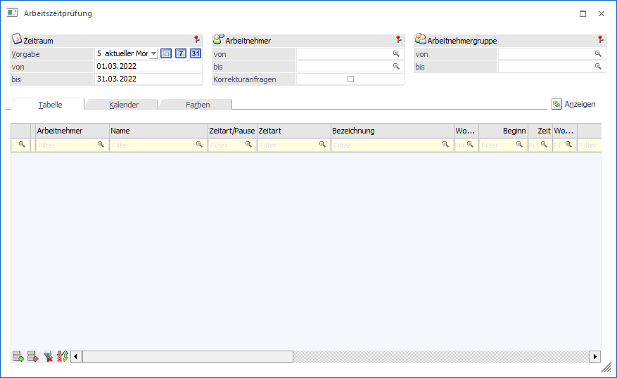
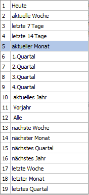
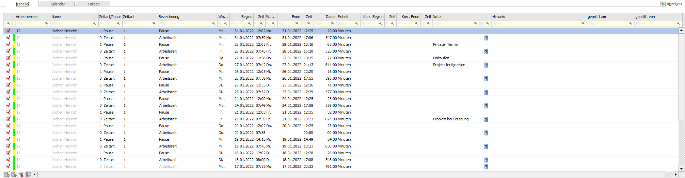
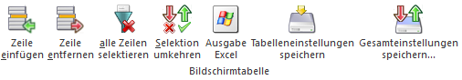
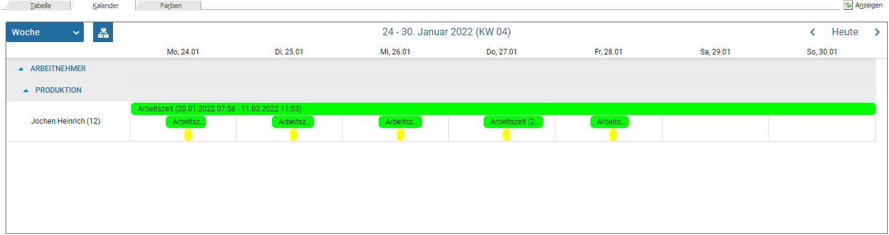
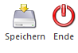
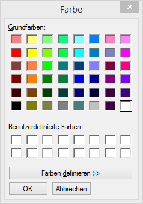
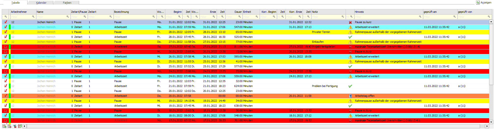
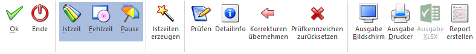

Im WinLine INFO unter dem Menüpunkt
1 SMART
1 Zeiterfassung
1 Arbeitszeitprüfung
können die erfassten bzw. bereits vorhanden Arbeitszeiten inkl. Fehlzeiten geprüft werden.

Ø Selektion
Über eine Auswahllistbox kann der Zeitraum selektiert werden, dabei stehen folgende Zeitraumselektionen zur Verfügung:

Zusätzlich stehen noch 3 weitere Buttons, mit denen man den Zeitraum schnell ändern kann.
ü Heute
ü aktuelle Woche
ü aktueller Monat
Nach der Auswahl eines Zeitraums werden die Felder "von" und "bis" automatisch neu berechnet und können manuell noch editiert werden.
Ø Arbeitnehmer von / bis
Über den Matchcode oder der Autovervollständigung kann auf die Arbeitnehmer bzw. Mitarbeiter eingrenzt werden.
Ø Arbeitnehmergruppe von / bis
Über den Matchcode oder der Autovervollständigung kann auf die Arbeitnehmergruppe eingrenzt werden.
Tabellenbutton
Ø  Anzeigen
Anzeigen
Beim Drücken des Anzeigen-Buttons werden alle Arbeitszeiten der eingegebenen Selektion angezeigt.
Hinweis
Die in der Zeitart oder der Pause hinterlegte Farbe wird in der Tabellenansicht in einer schmalen Spalte an erster Stelle und in der Kalenderansicht im Balken dargestellt.
Tabellenansicht

Ø Arbeitnehmer
Anzeige bzw. Auswahl bei Neuerfassung des Arbeitnehmers bzw. Mitarbeiters. Dazu steht der Matchcode oder die Autovervollständigung zur Verfügung.
Ø Name
Anzeige des Namens des Arbeitnehmers bzw. Mitarbeiters. Diese Spalte ist nicht editierbar.
Ø Zeitart/Pause
Auswahl bzw. Anzeige um welche Zeitart es sich handelt, dabei stehen in der Auswahllistbox "0 Zeitart" und "1 Pause" zur Verfügung.
Ø Zeitart
Je nachdem, ob eine Zeitart oder eine Pause ausgewählt worden ist, kann in diesem Feld entweder Zeitarten aus dem Zeitartenstamm oder Pausen aus dem Pausenstamm ausgewählt werden. Dabei steht der Matchcode zur Verfügung.
Ø Bezeichnung
Die Bezeichnung wird aus der jeweiligen Zeitart bzw. Pause herangezogen. Das Feld ist nicht editierbar.
Ø Wochentag von
Anhand des Beginn-Datums wird der Wochentag automatisch angezeigt. Das Feld ist nicht editierbar.
Ø Beginn
Eingabe bzw. Anzeige des Beginn-Datums für die Zeitart.
Ø Zeit
Eingabe bzw. Anzeige der Beginn-Uhrzeit für die Zeitart.
Ø Wochentag bis
Anhand des End-Datums wird der Wochentag automatisch angezeigt. Das Feld ist nicht editierbar.
Ø Ende
Eingabe bzw. Anzeige des End-Datums der Zeitart.
Ø Zeit
Eingabe bzw. Anzeige der End-Uhrzeit für die Zeitart.
Ø Dauer
Die Dauer wird anhand der Beginn- und End-Uhrzeit automatisch gerechnet. Das Feld ist nicht editierbar.
Ø Einheit
Anzeige der Einheit aus der Zeitart.
Ø Korr. Beginn
Ø Korr. Ende
Ø Zeit
Eingabe der korrigierten Datümer oder Uhrzeiten. Diese Felder werden automatisch mit Korrekturvorschlägen befüllt beim Prüfen z.B.: wenn es offene Arbeitszeiten gibt oder zu früh gekommen ist usw. Diese Korrekturvorschläge können ggf. in die Zeitspalten kopiert bzw. übernommen werden.
Ø Notiz
Erfassung einer Notiz pro Zeileneingabe.
Ø Hinweis
Hier wird das Ergebnis der Prüfung angezeigt. Alle Hinweise werden auch im Spooler als Prüfprotokoll angelegt. Das Feld wird erst bestickt, wenn die Prüfung gestartet worden ist.
Ø geprüft am
Sobald die Einträge bzw. Zeilen geprüft werden, steht hier die Information wann die Prüfung erfolgt ist.
Ø geprüft von
Sobald die Einträge bzw. Zeilen geprüft werden, steht hier die Information von wem die Prüfung erfolgt ist.
Tabellensymbole
Sobald der Prüfen-Button gedrückt wird, werden laut Selektion die Zeilen bzw. Einträge geprüft. Dabei wird bei jeder Arbeitszeile je nach Prüfung ein Symbol abgebildet.
Die Zeile wurde noch nicht geprüft.
Die Zeile wurde geprüft und es sind gibt keine Hinweise oder Warnungen.
Die Zeile wurde geprüft und es ist ein Fehler aufgetreten.
Die Zeile wurde geprüft und es besteht eine Warnung.
Die Zeile wurde bereits geprüft und es wurde bereits ein Report erstellt. Mittels Doppelklicks auf das Symbol wird die Fallansicht geöffnet.
Die Ergebnisse der Prüfung werden im Feld "Hinweis" angezeigt.
Tabellenbuttons

Ø Zeile einfügen
Mit diesem Button können neue Zeilen bzw. Einträger eingefügt werden.
Ø Zeile entfernen
Mit diesem Button kann die markierte Zeile entfernt werden.
Ø alle Zeilen selektieren
Alle Zeilen bzw. Einträge aus der Tabelle werden ausgewählt.
Ø Selektion umkehren
Die aktuelle Selektion wird umgekehrt.
Ø Ausgabe Excel
Der Inhalt der Tabellenansicht kann in eine Excel-Tabelle ausgegeben werden.
Ø Tabelleneinstellungen speichern
Die Spalten einer Tabelle können grundsätzlich an beliebige Positionen verschoben, bzw. in der Breite entsprechend angepasst werden. Durch Anwahl des Buttons "Tabelleneinstellungen speichern" werden die Einstellungen benutzerspezifisch gespeichert und bei dem nächsten Aufruf des Programmpunktes wieder vorgeschlagen.
Ø Gesamteinstellungen speichern
Im Gegensatz zu "Tabelleneinstellungen speichern" können mit "Gesamteinstellungen speichern" mehrere Tabellenaufbauten gespeichert und nach Wunsch geladen werden. Zusätzlich werden Sonderfunktionen der Tabelle (z.B. "Spalte gruppieren") ebenfalls bei der Speicherung bedacht.
Kalenderansicht
Im Kalender können Einträge entweder durch Verschieben oder durch Aufruf von "Bearbeiten"“ im Kontextmenü geändert werden. In beiden Fällen wird der Eintrag dann in der Tabellenansicht geladen und kann editiert werden.

Kalenderbuttons
Im Kalender können Einträge entweder durch Verschieben oder durch Aufruf von "Bearbeiten"
im Kontextmenü geändert werden. Sobald ein Eintrag bearbeitet wird, wird der Eintrag in der Tabellenansicht geladen und kann dort editiert werden. Bei Ende wird die Tabellen- bzw. Kalenderansicht wiederhergestellt.
Arbeitszeiten bzw. Einträge, welche durch die Prüfung Fehler aufweisen, werden in der Kalenderansicht mit einem roten Rand gekennzeichnet.

Ø Speichern
Mit dem Speichern-Button werden die Änderungen übernommen und es wird wieder automatisch in die Kalenderansicht gewechselt.
Ø Ende
Bei dem Ende - Button wird wieder in die Kalenderansicht gewechselt, ohne eine Änderung gespeichert zu haben.
Farben
Im Register Farben kann optional definiert werden, ob und wie die einzelnen Hinweise in der Tabelle farbig hinterlegt werden sollen. Dabei stehen folgende Auswahlen zur Verfügung:
Ø Warnungen
Ø Fehler
Ø Offene Arbeitstage
Ø Arbeitszeit erweitert
In jedem dieser Felder kann über das Matchcode-Symbol bzw. durch Drücken der F9-Taste das Fenster "Farbe" geöffnet werden.

Aus diesem Fenster kann nun eine Farbe ausgewählt werden, wobei über den Button "Farben definieren" auch alternative Farben eingestellt werden können. Ist die gewünschte Farbe selektiert, wird durch Drücken des OK-Buttons der RGB-Farbcode in das Eingabefeld übernommen. Der RGB-Farbcode kann auch manuell eingegeben werden. Diese Einstellung wird benutzerspezifisch gespeichert.
Sind entsprechende Farben für die Hinweise hinterlegt, so werden die einzelnen geprüften Zeilen auch in der entsprechenden Farbe dargestellt, um eben die Hinweise leichter erkennen zu können:

Hinweis:
Damit die Farbeinstellungen wirksam werden, muss nach Einstellung das Fenster geschlossen und neu geöffnet werden. Die farbige Darstellung der Zeilen wird in der WinLine mobile nicht unterstützt.
Buttons

Ø OK
Mit dem OK-Button werden die Änderungen übernommen und das Prüfkennzeichen gespeichert.
Hinweis:
Sollten Datümer oder Uhrzeiten korrigiert worden sein, werde die ursprünglichen Zeilen mit einem eigenen Kennzeichen weggespeichert und gesichert.
Ø Ende
Mit dem Ende-Button wird das Fenster geschlossen.
Ø Istzeit
Ø Fehlzeit
Ø Pause
Über diese Buttons kann gesteuert werden, welche Zeitartentypen angezeigt werden sollen.
Ø Istzeiten erzeugen
Mit dem Istzeiten erzeugen-Button werden für den selektierte Zeitraum und die selektierten Arbeitnehmer bzw. Mitarbeiter und Arbeitnehmergruppen auf Basis der Sollzeiten, Istzeiten erzeugt. Vorausgesetzt, dass beim Arbeitnehmer bzw. Mitarbeiter ein Arbeitszeitmodell hinterlegt ist, bei dem eine Istzeit für die automatische Anlage eingetragen ist.
Hinweis:
Istzeiten werden nur erzeugt, wenn es für den eingegebenen Zeitraum noch keine Ist- oder Fehlzeiten gibt und es sich nicht um einen Feiertag handelt.
Ø Prüfen
Mit dem Prüfen-Button werden alle Zeilen geprüft. Dabei werden offene Istzeiten, die Unter- oder Überschreitungen der max. Tages- oder Wochenarbeitszeit laut dem Arbeitszeitmodell Kulanzzeiten und Pausen geprüft. Die Prüfergebnisse werden im Feld Hinweis angezeigt und werden zusätzlich als Prüfprotokoll in den Spooler ausgegeben.
Achtung
Wenn Pausen nicht vorhanden sind, werden diese laut Arbeitszeitmodell automatisch eingefügt und die Arbeitszeit wird erweitert bzw. nach hinten geschoben. Die Arbeitszeit wird nur dann verlängert, wenn kein anderer Arbeitszeitenänderungsvorschlag, z.B.: Arbeitszeit wurde gekürzt, weil 10 Stunde überschritten sind, vorhanden ist. In solch einem Fall muss die Arbeitszeitverlängerung manuell erfolgen.
Wenn mehrere Arbeitszeiten vorhanden sind, wird die letzte Arbeitszeit verlängert. Dies wird nur dann gemacht, wenn dazwischen keine so lange Unterbrechung ist, die eine Arbeitszeitverlängerung ermöglichen würde.
Ø Detailinfo
Beim Drücken des Detailinfo-Button wird eine zweite Bildschirmtabelle mit allen Warnungen bzw. Fehlern angezeigt. In der Detailinfo-Tabelle werden nur Zeilen des aktuellen Arbeitnehmers angezeigt, welche mehrere Hinweismeldungen haben.
Wird mit Farben bei den Hinweisen gearbeitet, werden die Zeilen, die zum aktuell ausgewählten Hinweis gehören, auch in einer eigenen Farbe (nicht Hintergrundfarbe) dargestellt.
Ø Korrekturen übernehmen
Sollten Datümer oder Uhrzeiten korrigiert werden müssen, werden die Korrekturvorschläge in den jeweilige Zeitspalten pro Zeile angezeigt und können mit dem "Korrekturen übernehmen" Button in die Zeitspalten kopiert werden.
Ø Prüfkennzeichen zurücksetzen
Mit diesem Button kann das Kennzeichen von bereits geprüften Zeilen zurückgesetzt werden.
Ø Ausgabe Bildschirm
Ø Ausgabe Drucker
Ø Ausgabe XLSX
Das Arbeitszeitprotokoll kann am Bildschirm, Drucker oder als XLSX ausgegeben werden. In dieser Auswertung wird für jeden Arbeitnehmer bzw. Mitarbeiter für den angegebenen Zeitraum ein Vergleich der Soll- du Istzeiten angedruckt.
Hinweis
Beim Arbeitszeitprotokoll wird eine Fehlzeit nur dann bei der Ist-Bewertung ausgegeben, wenn es sich um eine interne Fehlzeit handelt, bei der die Option "ist Arbeitszeit" aktiviert ist, oder wenn es sich um eine "§-geregelte Fehlzeit" handelt (ausgenommen davon ist der "unbezahlte Urlaub".
Ø Report erstellen
Mit diesem Button wird der Workflow "Arbeitszeiten versenden" angestoßen, dabei wird das Arbeitszeitprotokoll an den betroffenen Arbeitnehmer bzw. Mitarbeiter versendet und ins Archiv gespeichert.
Hinweis
Wurde bereits ein Report für den angegebene Zeitraum erstellt wird in der Tabelle in der Spalte "Hinweis" ein entsprechendes Symbol angezeigt.